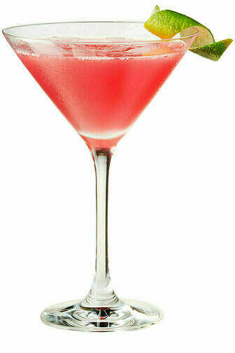

Космополитен

«Космополитен» создала Черил Кук, женщина-бармен из местечка Южный пляж во Флориде. На протяжении долгого времени этот коктейль был популярен среди посетителей гей-клубов. Однако он приобрёл широкую популярность лишь в 1998 году в связи с выходом на экраны сериала «Секс в большом городе», в котором коктейль «Космополитен» являлся любимым напитком героинь.